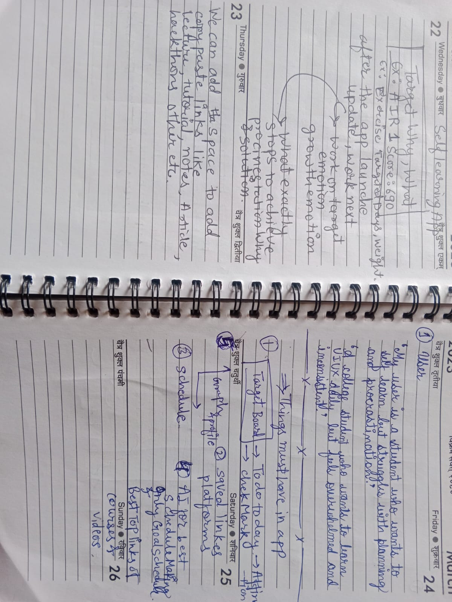
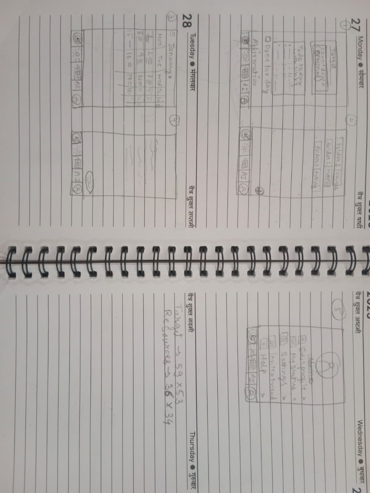

The Visual System
The 5 Core Screens in High Fidelity

Left to right: Target Board · Saved Resources · Schedule · AI Support · Growth & Profile
A 5-screen mobile workspace designed for people who genuinely want to learn, but get paralyzed by overthinking, chaotic planning, and apps that make them feel guilty when life gets in the way.
When you try to learn something big on your own, motivation starts high. But soon, you have 30 saved YouTube links, 5 unfinished PDF courses, and a giant to-do list that triggers an immediate freeze response. Most productivity apps make this worse: they scream at you with red badges, break your streak counters, and make you feel guilty for simply having an off day. Eventually, you stop opening the app altogether.
People like me: self-directed learners trying to build skills daily while juggling classes, personal commitments, and daily life. We don't lack ambition—we lack emotional bandwidth. What we need isn't another complicated project management dashboard; we need a calm space that helps us focus on one real thing today without the weight of everything we haven't done yet.
I designed a 5-step flow based on calm design principles: a single daily focus board, an organized link drawer, a visual month map, an AI helper strictly locked to planning, and a profile that tracks your effort. Missed a task yesterday? It quietly rolls into today under "Carried forward"—no red colors, no alarms, no broken chains.
Instead of ending the day feeling like you didn't do enough, the app celebrates what you actually showed up for: "You showed up 6 out of 7 days, that's real." That simple shift in tone changes self-education from an exhausting chore into a rewarding daily habit.
Before touching Figma, I wrote down the raw emotional hurdles: procrastination, feeling overwhelmed, and what features must be there.

diary1.jpg: Defining the user, emotional barriers, and must-have app features

diary2.jpg: Sketching the 5 core layouts: Target, Resources, Schedule, AI, and Profile
“My user is a student who wants to self learn but struggles with planning and procrastination. A college student who wants to learn UI/UX daily, but feels overwhelmed and inconsistent.”
Left to right: Target Board · Saved Resources · Schedule · AI Support · Growth & Profile

I kept the main screen intentionally simple. You don't see 50 items here. You see your big goal at the top, today's 3 priority tasks, and a button to check them off.
The biggest behavioral detail here is the "Carried forward" section. If you couldn't finish something yesterday, it doesn't turn red. There are no loud warning icons. It just sits quietly, waiting for whenever you are ready.
Most self-learners lose 15 minutes before every study session just searching for links in WhatsApp groups, Telegram chats, or random browser bookmarks.
I created 4 simple, distraction-free folders: Courses, Videos, Articles, and Notes. You copy-paste the link once, it gets filed, and your mind stays clear.


Real study never happens in perfect 1-hour calendar blocks. Things get delayed. You get tired.
This schedule view gives you an honest look at the month. Green shows days you showed up. Rust shows today. Soft blue shows what is planned. If you couldn't do a task, you just tap "Reschedule" and move it to tomorrow with zero drama.
Most AI features in apps distract you with infinite chatting. You go in to plan your day and end up reading trivia for 30 minutes.
I added a clear rule at the top: "AI here only helps with goal scheduling, Nothing else." You tell it what you want to achieve and how many days you have. It gives you a 3-part milestone roadmap (Foundation, Practice, Tests) and one tap sends it straight to your calendar.


Most apps focus on what you missed. If you had a bad day, they show you an empty space or a broken streak.
I wanted this screen to feel like a supportive friend. It simply shows how many days you showed up. "You showed up 6 out of 7 days, that's real." That honest validation keeps you coming back tomorrow without shame.
Good UX isn't just about pretty buttons or Figma Auto-Layout. It's about understanding how a person feels when they are alone in their room at 9 PM trying to finish coursework after an exhausting day.
If your interface makes them feel small, guilty, or overwhelmed, they will leave. If it makes them feel calm, grounded, and understood, they will stay. That is the kind of designer I am.